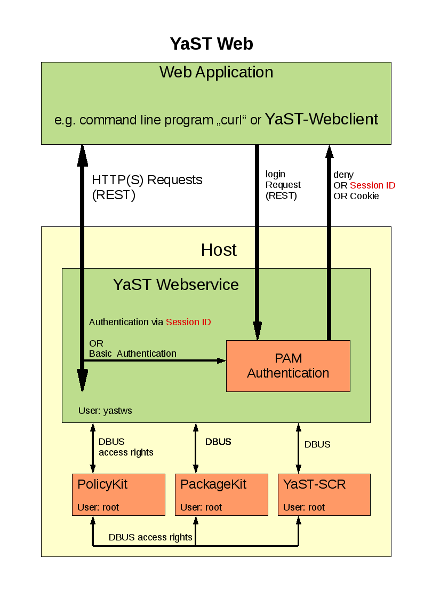

Yast2-webservice provides an interface to the YaST environment of the concerning host machine. This service is running with an installed webserver (e.g. lighthttp) and provides an API which is based on the REST (Representational state transfer) architecture. Please have a look to
http://en.wikipedia.org/wiki/Representational_State_Transfer
for more information about REST.
E.g. in order to get or set the systemtime you can use the HTTP URL:
http://<name_of_the_host>/systemtime/currenttime
In order to identify if this value has to be set or has to be get the HTTP protocol has four methods:
| GET | Retrieve a value | PUT | Overwrite a value | POST | Create a new value | DELETE | Delete a value. E.g. delete a user account |
Information can be get/set in/with 3 different formats:
http://<name_of_the_host>/systemtime
Returns the systemtime in HTML format. Calling this URL not via a
browser the values will be retunred in XML format.
http://<name_of_the_host>/systemtime.xml
Returns the systemtime in XML format
http://<name_of_the_host>/systemtime.json
Returns the systemtime in JSON format
Information can be get in a block or each entry of the block can be get
in an extra HTTP call:
GET http://<name_of_the_host>/systemtime.xml
returns
<systemtime>
<currenttime type="datetime">2008-09-10T17:13:37Z</currenttime></systemtime>
<is_utc type="boolean">false</is_utc>
<timezone>Europe/Berlin</timezone>
<validtimezones type="array"><timezone><id>Africa/Abidjan</id></timezone><timezone></validtimezones><id>Africa/Accra</id></timezone>
....
..
.
whereas
GET http://0.0.0.0:3001/systemtime/timezone.xml
returns
<systemtime>
<currenttime type="datetime" nil="true"/></systemtime>
<is_utc type="boolean" nil="true"/>
<timezone>Europe/Berlin</timezone>
<error_id type="integer">0</error_id>
<error_string/>
So, only the required value has been set in the return value.
GET calls can be generated on the command line with the call:
curl -0 -X GET -b <cookie_file> http://0.0.0.0:3001/systemtime/timezone.xml
("-b <cookie_file>" describes a cookie with the filename "cookie_file". This cookie contains the login information of the current session.)
Put requests are taken for OVERWRITING existing values.
Multi values can be overwritten at once in a block or each entry of the block
can be set explicit in an extra HTTP call:
PUT http://<name_of_the_host>/language with a block of XML data
<?xml version="1.0" encoding="UTF-8"?>
<language>
<first_language>de_DE</first_language></language>
<second_languages type="array"><language><id>en_US</id></language><language></second_languages><id>en_GB</id></language>
whereas
PUT http://0.0.0.0:3001/language/second_languages with a single XML value
<?xml version="1.0" encoding="UTF-8"?>
<language>
<second_languages type="array"></language><language><id>en_US</id></language><language></second_languages><id>en_GB</id></language>
So only the required value has been set.
Note: Also HTML and JSON format is a valid format for values which have to be changed.
Put calls can be generated on the command line with the call:
curl -0 -v -H "Content-Type: application/xml; charset=utf-8" -T <data-file> -b <cookie_file> http://0.0.0.0:3001/language/second_languages.xml
("-b <cookie_file>" describes a cookie with the filename "cookie_file". This cookie contains the login information of the current session.)
Post requests are used for creating new entries e.g. adding a new user account:
POST http://0.0.0.0:3001/users.xml with the XML values:
<?xml version="1.0" encoding="UTF-8"?>
<user>
<default_group>users</default_group></user>
<full_name>tux2 tux2</full_name>
<groups type="array"><group><id>users</id></group><group></groups><id>dialout</id></group>
<home_directory>/home/tux2</home_directory>
<login_name>tux2</login_name>
<login_shell>/bin/bash</login_shell>
<no_home type="boolean">false</no_home>
<password>tuxtux</password>
<uid type="integer">1002</uid>
POST calls can be generated on the command line with the call:
curl -0 -X POST -v -H "Content-Type: application/xml; charset=utf-8" -T <data-file> -b <cookie_file> http://0.0.0.0:3001/users.xml
(<data-file> is a file which contains the XML values described above. "-b <cookie_file>" describes a cookie with the filename "cookie_file". This cookie contains the login information of the current session.)
Note: Also HTML and JSON format is a valid format for values which have to be created.
Delete requests are used for deleting entries e.g. an user account:
DELETE http://0.0.0.0:3001/users/tux2
DELETE calls can be generated on the command line with the call:
curl -0 -X DELETE -b <cookie_file> http://0.0.0.0:3001/users/tux2
("-b <cookie_file>" describes a cookie with the filename "cookie_file". This cookie contains the login information of the current session.)
Login and creates a session. An additional login cookie will be generated if it is required.
The user account will be checked with PAM. So SYSTEM users can login only.
POST <hostname>/login checks an SYSTEM accout and creates a session with the given values:
<hash>
<login>tuxtux</login></hash>
<password>password_tuxtux</password>
<remember_me type="boolean">true</remember_me>
remember_me: Generates a cookie with a valid time period of 1 day.
This returns:
<hash>
<login>granted</login></hash>
OR in the error case:
<hash>
<login>denied</login></hash>
If you are using "curl" for testing you will have to generate a session cookie with the call:
curl -0 -X POST -v -H "Content-Type: application/xml; charset=utf-8" -T <login_xml_file> -c <cookie_file> http://0.0.0.0:3001/login.xml
This call will generate a cookie file with login data described in <login_xml_file>.
Checking if the user of the current session has the permission of the
given rule <policyKitRule>.
<policyKitRule> is given without the "pre" string
"org.opensuse.yast.webservice.".
This call is useful for applications which have to check the permissions BEFORE they generate a
e.g. menue entry or input frame.
GET <hostname>/checkpermission/<policyKitRule> checks the permission and returns:
<hash>
<permission>granted</permission></hash>
OR
<hash>
<permission>denied</permission></hash>
Destroys the current session and invalidates the concerning cookie (if there is one).
POST <hostname>/logout
This returns:
<hash>
<logout>Goodbye!</logout></hash>
Returns a list of all available modules. The permissions are set if the
user has logged in.
GET <hostname>/.xml
returns:
<links type="array">
<link>
<description>Creating a YaST Webservice session</description></link>
<path>login</path>
<install_permission type="boolean">false</install_permission>
<read_permission type="boolean">false</read_permission>
<write_permission type="boolean">false</write_permission>
<new_permission type="boolean">false</new_permission>
<execute_permission type="boolean">false</execute_permission>
<description>Closing YaST Webservice session</description></link>
<path>logout</path>
<install_permission type="boolean">false</install_permission>
<read_permission type="boolean">false</read_permission>
<write_permission type="boolean">false</write_permission>
<new_permission type="boolean">false</new_permission>
<execute_permission type="boolean">false</execute_permission>
<description>Managing Linux services like samba, ntp,...</description></link>
<path>services</path>
<install_permission type="boolean">false</install_permission>
<read_permission type="boolean">false</read_permission>
<write_permission type="boolean">false</write_permission>
<new_permission type="boolean">false</new_permission>
<execute_permission type="boolean">false</execute_permission>
<description>Setting system time</description></link>
<path>systemtime</path>
<install_permission type="boolean">false</install_permission>
<read_permission type="boolean">false</read_permission>
<write_permission type="boolean">false</write_permission>
<new_permission type="boolean">false</new_permission>
<execute_permission type="boolean">false</execute_permission>
<description>Setting language</description></link>
<path>language</path>
<install_permission type="boolean">false</install_permission>
<read_permission type="boolean">false</read_permission>
<write_permission type="boolean">false</write_permission>
<new_permission type="boolean">false</new_permission>
<execute_permission type="boolean">false</execute_permission>
<description>Checking access rights</description></link>
<path>users</path>
<install_permission type="boolean">false</install_permission>
<read_permission type="boolean">false</read_permission>
<write_permission type="boolean">false</write_permission>
<new_permission type="boolean">false</new_permission>
<execute_permission type="boolean">false</execute_permission>
<description>Updating System</description></link>
<path>patch_updates</path>
<install_permission type="boolean">false</install_permission>
<read_permission type="boolean">false</read_permission>
<write_permission type="boolean">false</write_permission>
<new_permission type="boolean">false</new_permission>
<execute_permission type="boolean">false</execute_permission>
Managing system services like cron, smbfs, gpm, sshd, random, cups, ntp
GET <hostname>/services.xml
returns:
<services type="array">
<service>
<link>smbfs</link></service>
<path>/etc/init.d/smbfs</path>
<commands><command></commands><name>run</name></command> <command><name>stop</name></command> <command><name>status</name></command> <command><name>restart</name></command>
<error_id type="integer">0</error_id>
<error_string/>
<link>sshd</link></service>
<path>/etc/init.d/sshd</path>
<commands><command></commands><name>run</name></command> <command><name>stop</name></command> <command><name>status</name></command> <command><name>restart</name></command>
<error_id type="integer">0</error_id>
<error_string/>
GET <hostname>/services/smbfs.xml
returns
<service>
<link>smbfs</link></service>
<path>/etc/init.d/smbfs</path>
<commands><command></commands><name>run</name></command> <command><name>stop</name></command> <command><name>status</name></command> <command><name>restart</name></command>
<error_id type="integer">0</error_id>
<error_string/>
PUT <hostname>/services/ntp/commands/restart.xml
GET <hostname>/services/ntp/config.xml
returns
<config_ntp>
<enabled type="boolean">true</enabled></config_ntp>
<manual_server></manual_server>
<use_random_server type="boolean">true</use_random_server>
<error_id type="integer">0</error_id>
<error_string/>
| enabled: | the service will be automatically enabled while booting | manual_server: | user selected ntp server | use_random_server: | server will be selected from pool.ntp.org |
PUT <hostname>/services/ntp/config.xml
Writes ntp settings to the system. The given parameters are the same as the returned values of the GET request.
Note: Each single value can be get or set explicit.
e.G. GET <hostname>/services/ntp/config/enabled.xml returns this value only.
Managing time, timezone,....
GET <hostname>/systemtime.xml
returns
<systemtime>
<currenttime type="datetime">2008-09-11T11:29:21Z</currenttime></systemtime>
<is_utc type="boolean">false</is_utc>
<timezone>Europe/Berlin</timezone>
<validtimezones type="array"><timezone><id>Africa/Abidjan</id></timezone><timezone></validtimezones><id>Africa/Accra</id></timezone>
....
..
.
<error_id type="integer">0</error_id>
<error_string/>
PUT or POST <hostname>/systemtime.xml
Writes time settings to the system. The given parameters are the same as the returned values of the GET request.
Note: Each single value can be get or set explicit.
e.g. GET <hostname>/systemtime/timezone.xml returns this value only.
Managing language settings.
GET <hostname>/language.xml
returns
<language>
<first_language>de_DE</first_language></language>
<second_languages type="array"><language><id>en_US</id></language><language></second_languages><id>en_GB</id></language>
<available type="array"><language><id>af_ZA</id></language>
<name>Afrikaans</name><language></available><id>ar_EG</id></language>
<name>Arabic</name>
......
....
..
<error_id type="integer">0</error_id>
<error_string/>
| first_language: | primary language | second_languages: | a list of languages separeted by commas | available: | languages which are available on the system |
| ldap_password: | Ldap password if the user account will created with Ldap. | type: | valid values: local, system, nis, ldap |
Note: Each single value can be get or set explicit.
e.g. GET <hostname>/users/tux/uid.xml returns the UID of of the user tux only.
POST <hostname>/users.xml
or POST <hostname>/users/new/create.xml creates a new user account with the values:
<user>
<default_group>users</default_group></user>
<full_name>tux2 tux2</full_name>
<groups type="array"><group><id>users</id></group><group></groups><id>dialout</id></group>
<home_directory>/home/tux2</home_directory>
<login_name>tux2</login_name>
<login_shell>/bin/bash</login_shell>
<no_home type="boolean">false</no_home>
<password>tuxtux</password>
<uid type="integer">1002</uid>
| no_home: | do not create the home directory |
Additional optional tags:
| ldap_password: | Ldap password if the user account will created with Ldap. | type: | valid values: local, system, nis, ldap |
DELETE <hostname>/users/tux delete the user account tux
Exporting a SSH key to the home directory of the given user.
PUT <hostname>/users/<loginname>/sshkey.xml with the value:
<user>
<sshkey>This should be the key</sshkey></user>
PolicyKit user Permissions.
GET <hostname>/users/<loginname>/permissions returns an array of policies:
<permissions type="array">
<permission>
<error-id type="integer">0</error-id></permission>
<error-string></error-string>
<grant type="boolean">true</grant>
<name>read-systemtime</name>
<error-id type="integer">0</error-id></permission>
<error-string></error-string>
<grant type="boolean">true</grant>
<name>write-systemtime</name>
Checking if the user has the permission of the given rule <policyKitRule>.
<policyKitRule> is given without the "pre" string
"org.opensuse.yast.webservice.".
GET <hostname>/users/<loginname>/permissions/<policyKitRule>
returns the permission:
<permission>
<error-id type="integer">0</error-id></permission>
<error-string></error-string>
<grant type="boolean">true</grant>
<name>write-systemtime</name>
PUT <hostname>/users/<loginname>/permissions/<policyKitRule> with the value:
<permission>
<grant type="boolean">true</grant></permission>
Evaluate and install needed patches.
GET <hostname>/patch_updates.xml returns
<patch-updates type="array">
<patch-update>
<arch>noarch</arch></patch-update>
<kind>important</kind>
<name>PackageKit</name>
<repo>openSUSE-11.0-Updates</repo>
<resolvable_id type="integer">139</resolvable_id>
<summary></summary>
<error_id type="integer">0</error_id>
<error_string/>
<arch>noarch</arch></patch-update>
<kind>important</kind>
<name>zypper</name>
<repo>openSUSE-11.0-Updates</repo>
<resolvable_id type="integer">114</resolvable_id>
<summary></summary>
<error_id type="integer">0</error_id>
<error_string/>
<arch>noarch</arch></patch-update>
<kind>important</kind>
<name>yast2-ncurses-pkg</name>
<repo>openSUSE-11.0-Updates</repo>
<resolvable_id type="integer">83</resolvable_id>
<summary></summary>
<error_id type="integer">0</error_id>
<error_string/>
| arch: | Architecture |
| kind: | important(recommded), security, low(optional) |
| name: | Patchname |
| repo: | Concerning repository |
| resolvable_id: | internal patch ID |
| summary: | description |
POST <hostname>/patch_updates/<resolvable_id> Install the patch with the internal patch ID.
Almost each YaST module has a command line interface which can be used with HTTP/REST.
GET <hostname>/yast_modules.xml returns a list of all available YaST modules
<hash>
<module>
<id>dns-server</id></module>
<error_id type="integer">0</error_id>
<error_string/>
<id>update</id></module>
<error_id type="integer">0</error_id>
<error_string/>
<id>remote</id></module>
<error_id type="integer">0</error_id>
<error_string/>
<id>dirinstall</id></module>
<error_id type="integer">0</error_id>
<error_string/>
<id>restore</id></module>
<error_id type="integer">0</error_id>
<error_string/>
....</module>
Evaluate all possible commands and options of a YaST module.
GET <hostname>/yast_modules/nis.xml returns all commands and options of the nis module
<module>
<id>nis</id>
<commands>
<command><name>disable</name></command>
<help>Disable the NIS client</help>
<options/>
<command><name>find</name></command>
<help>Show available NIS servers for given domain</help>
<options>
<option><name>domain</name></option>
<type>string</type>
<help>NIS domain</help>
</options>
<command><name>enable</name></command>
<help>Enable your machine as NIS client</help>
<options>
<option><name>automounter</name></option>
<type>enum</type>
<help>Start or stop automounter</help>
<option><name>domain</name></option>
<type>string</type>
<help>NIS domain</help>
<option><name>server</name></option>
<type>string</type>
<help>NIS server name or address</help>
<option><name>broadcast</name></option>
<type>enum</type>
<help>Set or unset broadcast search</help>
</options>
<command><name>configure</name>
<help>Change the global settings of NIS client</help>
<options>
<option><name>broadcast</name></option>
<type>enum</type>
<help>Set or unset broadcast search</help>
<option><name>automounter</name></option>
<type>enum</type>
<help>Start or stop automounter</help>
<option><name>domain</name></option>
<type>string</type>
<help>NIS domain</help>
<option><name>server</name></option>
<type>string</type>
<help>NIS server name or address</help>
</options></command></commands>
<command><name>summary</name></command>
<help>Configuration summary of NIS client</help>
<options/>
<error_id type="integer">0</error_id>
<error_string/>
</module>POST <hostname>/yast_modules/nis.xml run the nis module with the commands:
<hash>
<command>find</command>
<domain>suse.de</domain>
</hash>This returns:
<hash>
<stdout></stdout>
<exit type="integer">16</exit>
<stderr>10.10.0.1
10.10.0.10
</stderr>
</hash>
Security
General

Login
The user (Web Application) starts a login request with user/password via Http(s)/REST to the YaST Webservice. This request will be checked with PAM . The access will be granted or denied. If the request has been successfully finished a session will be created and (on demand) a cookie will be send to the Web Application.
Single task e.g. getting system time settings
The user "tux" (Web Application) sends the Http(s) request:
GET http://<name_of_the_host>/systemtime.xml
Authentification
The YaST Webservice uses Basic Authentification (Digest Auth. and Kerberos Auth. are planned). This means that the username and the password are included in the HTTP header.
The YaST Webservice has different levels of checking the authentification in the following order:
- The "user" and "password" in the HTTP header (Basic Auth.) will be checked with PAM.
- The field "password" contains a session ID (from a former login request) which will be compared with the current session.
- If the request includes a cookie with the session information (can be generated while the login request) this cookie will be compared whith the current session.
If ALL these checks fail an HTTP error 401 will be returned to the sender.
Request Process
The YaST Webservice checks if "tux" has the right for reading these settings:
policyKit_check ("tux", "read.systemtime")
If the permission has been granted the YaST Webservice starts the needed commands to the SCR - Agent in order to get all needed information:
Scr.read(".sysconfig.clock.HWCLOCK")
Scr.execute("/bin/date")
Scr.read(".sysconfig.clock.TIMEZONE")These requests will be sent to the SCR - Agent with the user account "root".
The SCR - Agent checks with policyKit if "yastws" has the rights for these calls.
API Policies
Each YaST Webservice call has concerning access permissions which can be defined for each user.These permissions are handled by PolicyKit in the file:
/usr/share/PolicyKit/policy/org.opensuse.yast.webservice.policy
If you are getting a permission error while using the API just have a look to the webserver logfile in order to get the information which permissions are missed:
Action: org.opensuse.yast.webservice.run-yastmodule User: schubi Result: no
Action: org.opensuse.yast.webservice.run-yastmodule-lan User: schubi Result: yesThese permissions can be set with the call "polkit-auth" like:
polkit-auth --user schubi --grant org.opensuse.yast.webservice.run-yastmodule-lan
Or can be reset by:
polkit-auth --user schubi --revoke org.opensuse.yast.webservice.run-yastmodule-lan
In order to cleanup or to grant ALL permissions you can use the ruby script policyKit-rights.rb delivered with this package:
Usage: policyKit-right.rb --user <user> --action (show|grant|revoke)
NOTE: This program should be run by user rootThis call grant/revoke ALL permissions for YaST the Webservice.
In order to grant/revoke single rights use:
polkit-auth --user <user> (--grant|-revoke) <policyname>In order to show all possible permissions use:
polkit-actionRoles
In order to avoid declaring permissions for each user there is the possibility to define roles for each user like: administrator, secretary, ...The definition which roles belong to a user are defined in file /etc/yast_user_roles:
#
# file : /etc/yast_user_roles
#
# This file describes roles of a user accounts for the YaST Webservice
# "user accounts": System account which is accessible e.g. via PAM.
# "roles" : Describes user accounts for which policies have
# been generated
#
# Format: <user> <role 1>,<role 2>,...<role n>
#So, you have to generate a system user e.g. "secretary" and define special right for that user (described above).
For getting "secretary" rights you have to add the concerning user in the file /etc/yast_user_roles only.
This is a very simple way to store this information. Much more elegant would be to store it to another place e.g. via ldap. Make a proposal :-)